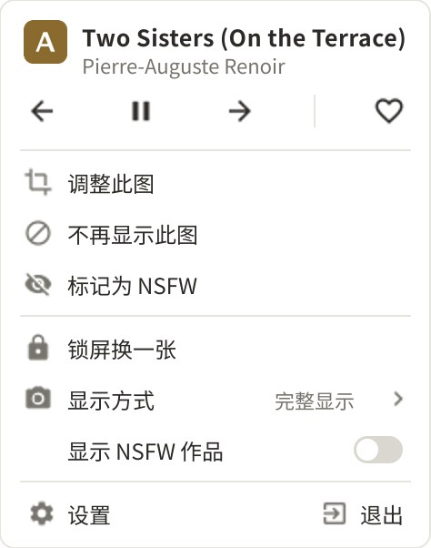
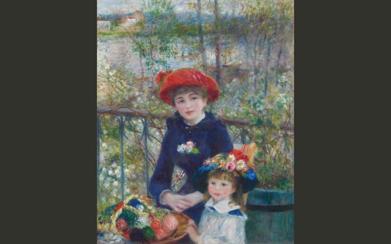
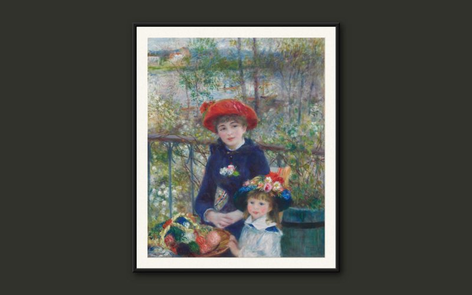
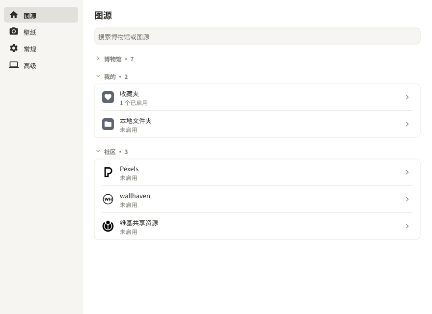

01
常驻托盘，定时换一幅
不用管它，到时间自动换下一幅。想知道屏幕上是哪幅画，点开托盘，第一行就是作品、画家和博物馆。
每台显示器独立轮换，可以各显示不同的画。锁屏也会一起更换。
把你的 Windows 壁纸换成
不用管它，到时间自动换下一幅。想知道屏幕上是哪幅画，点开托盘，第一行就是作品、画家和博物馆。
每台显示器独立轮换，可以各显示不同的画。锁屏也会一起更换。

三种显示模式，下面是同一幅画的效果。画面上不会叠加文字或图标。默认“完整显示”，在托盘里一键切换。



除了博物馆的画，也可以用壁纸网站 wallhaven、免费图库 Pexels、维基共享资源（维基百科的图片库）上的图，或者你电脑里的一个文件夹。

以下博物馆的开放馆藏：
其他图源：维基共享资源、wallhaven、Pexels、本地文件夹和收藏夹。
来自上面列出的博物馆的开放馆藏，直接从博物馆自己的服务器下载。这些图片是博物馆公开、允许自由使用的，大多是已进入公有领域的作品。托盘菜单会写明作品、画家和博物馆。wallhaven、Pexels 和维基共享资源上的图，按这些网站自己的条款使用。
有，观画壁纸就是做这个的。它常驻 Windows 10 / 11 的托盘，从大都会艺术博物馆、芝加哥艺术博物馆、荷兰国立博物馆等博物馆的开放馆藏下载名画，定时更换壁纸。
不用安装，观画壁纸只是一个 exe 文件，放在哪个文件夹都能运行。下载图片需要联网。它没有账号、没有统计分析，也没有崩溃上报，不会把你或你电脑的任何信息发给开发者。详见隐私说明。
观画壁纸是 Spice 的非官方修改版，与原项目无关，也不由原作者提供支持。两者可以同时装，但不要同时运行，它们都会更换壁纸。
免费，源码公开。许可证是 PolyForm Noncommercial：可以使用、修改和分享，但不能用于商业目的。
不能保证。过滤依据的是馆藏分类、图源的分级和你自己的标记，所以只能说“默认过滤”，不是“绝对过滤”。
支持。每台显示器独立轮换，可以各显示不同的画。锁屏也会换成名画。
第一次运行观画壁纸时，Windows 可能会这样提示。点更多信息，再点仍要运行就行。
会，默认随 Windows 启动。不需要的话，在“设置 › 常规”里关掉随 Windows 启动。
目前没有，只提供 Windows 版。
观画壁纸由 Karl Kwong 创建的 Spice 修改而来。
画作来自各博物馆的开放获取项目。观画壁纸使用与 Spice 相同的 PolyForm Noncommercial License 1.0.0，并保留原版权声明。